ロボットシミュレータChoreonoidについて
コレオノイドはオープンソースのロボット用統合GUIソフトウェアです。動力学シミュレーション機能や動作振り付け機能を標準で備えており、さらに機能を追加していくことも可能です。
「ロボット用GUIアプリケーション開発フレームワーク」という側面も持っています。
「ロボット用GUIアプリケーション開発フレームワーク」という側面も持っています。
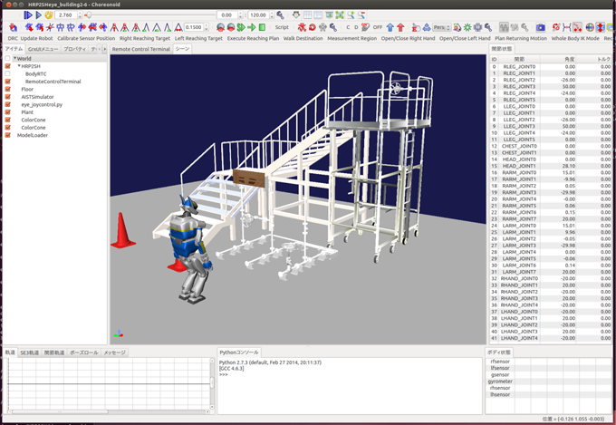
「ロボットシミュレータ操作画面」
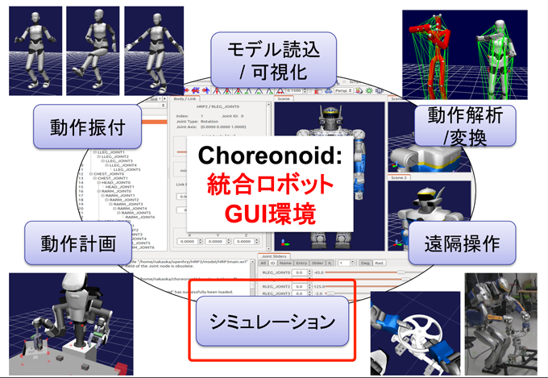
「Choreonoid図解」
シミュレータとしてのChoreonoidの詳細
| 関節の動き | 回転、直動、簡易クローラ |
|---|---|
| センサーの箇所 | 力トルクセンサ、ジャイロ、加速度センサ、カメラ（含むRGB-Dカメラ）、レンジファインダ |
| ライト | OpenGLを用いた簡易的なもの |
| シミュレーションの 形式 |
閉リンク機構 |
| 形状表現 | ポリゴンによる形状表現 |
| 記述方式 | ロボット、環境のモデルはVRML97, COLLADAで記述 |
| 接続に関して | RTMを用いて実装された制御ソフトウェアと接続可 |
| その他の事項 | 変形、水中、飛行、電波、風、霧等のシミュレーション機能はなし |
ロボットモデルの記述方法
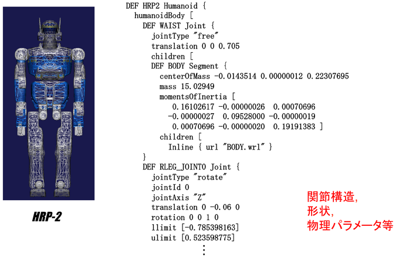
RTコンポーネントを用いたシミュレーション
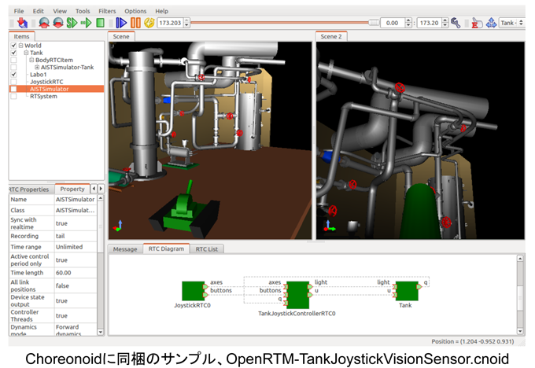
コントローラと入出力
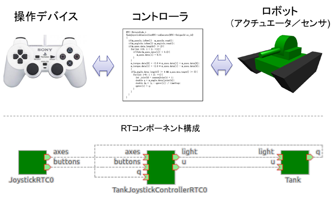
コントローラの記述
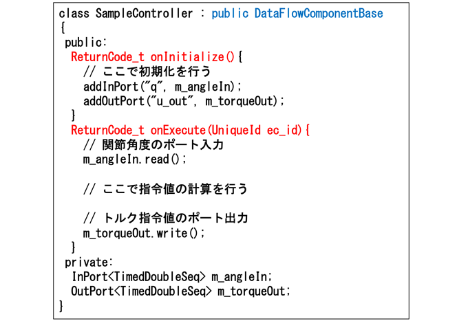
Choreonoid操作画面
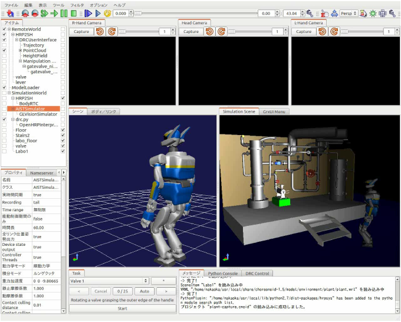
RTコンポーネント構成
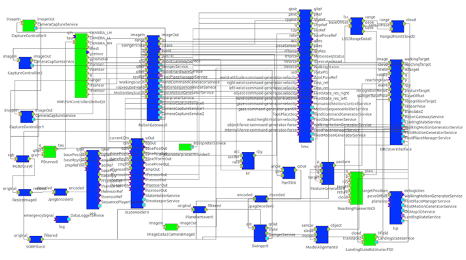
RTミドルウエアとは？
●ロボットシステム構築を効率化するためのソフトウエア開発基盤
●OMGで国際標準化されたコンポーネントフレームワークを提供（OpenRTMは実装の名前）
●OSや言語、集中系・分散系に柔軟に対応
●OMGで国際標準化されたコンポーネントフレームワークを提供（OpenRTMは実装の名前）
●OSや言語、集中系・分散系に柔軟に対応
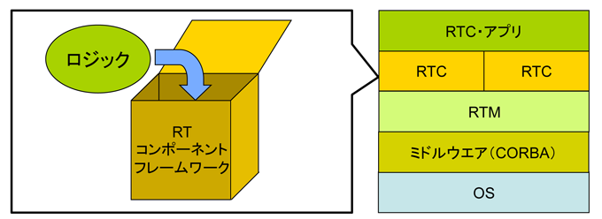
RTコンポーネント化のメリット
| 再利用性の向上 | 同じコンポーネントをいろいろなシステムに使いまわせる |
|---|---|
| 選択肢の多様化 | 同じ機能を持つ複数のコンポーネントを試すことができる |
| 柔軟性の向上 | コンポーネント構成をかえるだけで様々なシステムを構築できる |
| 信頼性の向上 | コンポーネント単位でテスト可能なため信頼性が向上する |
| 堅牢性の向上 | システムがコンポーネントで分割されているので、一つの問題が全体に波及しにくい |
RTCの分割と連携
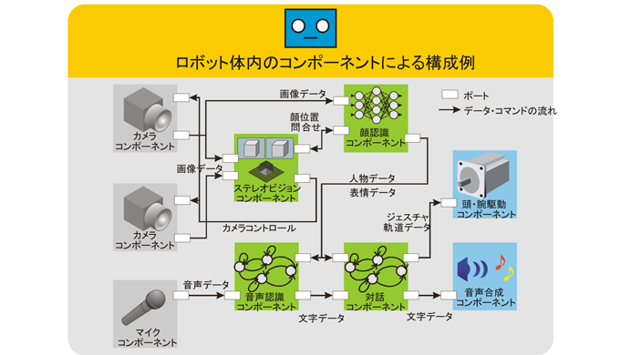
（モジュール）情報の隠蔽と公開のルールが重要
ツールチェーン
| 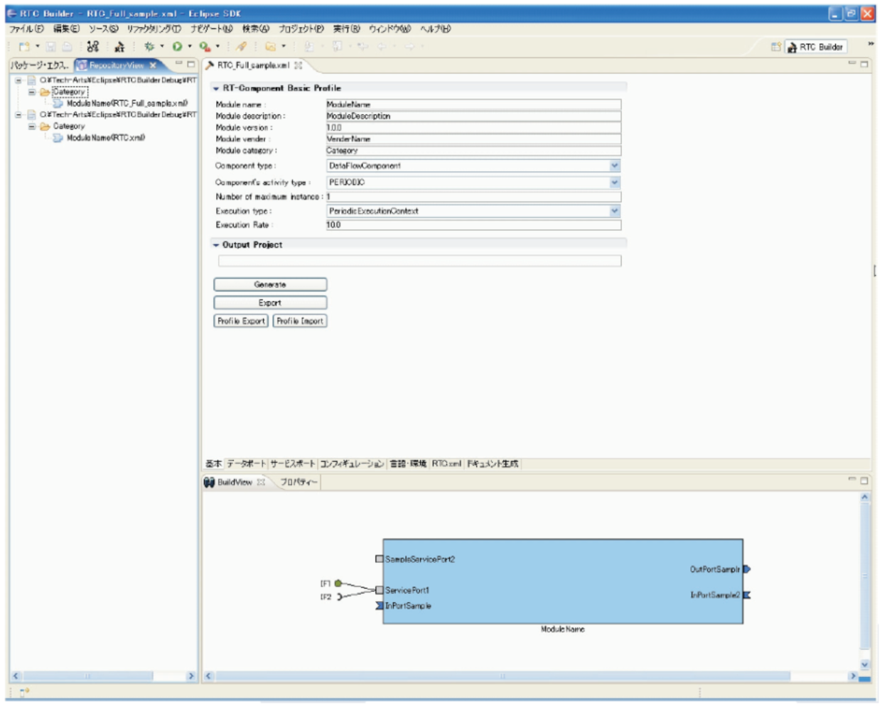 | 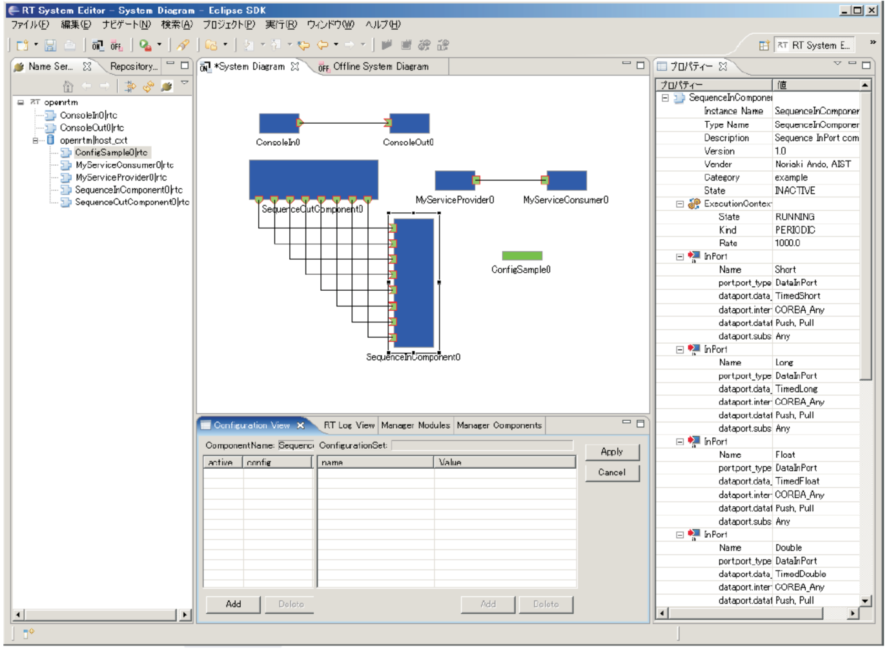 |
| RTCBuilder RTコンポーネント設計・コード生成 |
RTSystemEditor RTCを組み合わせてシステムを設計 |
RTC・RTM統合開発環境の整備
RTC設計・実装・デバッグ、RTMによるインテグレーション・デバッグまでを
一貫して行うことができる統合開発環境をEclipse上に構築